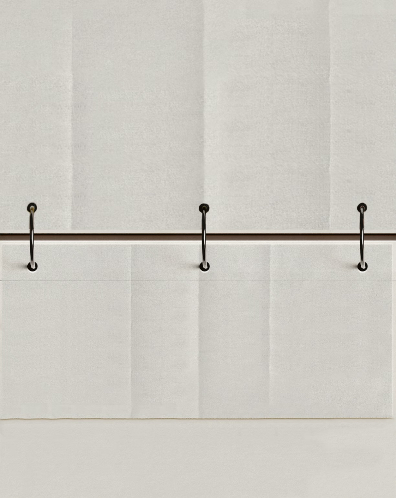
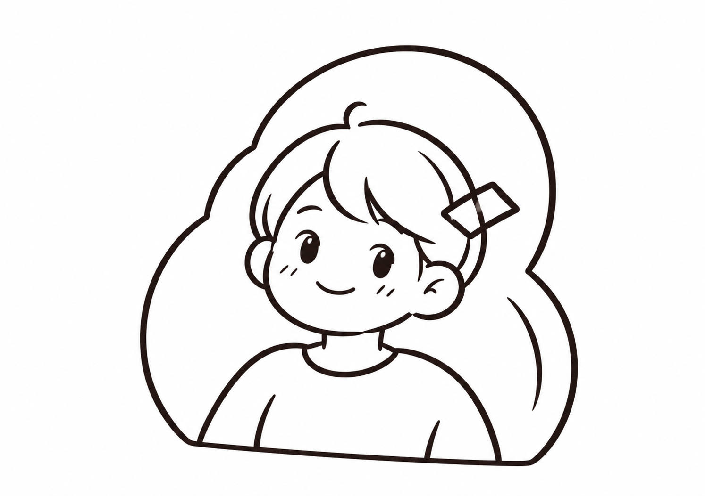
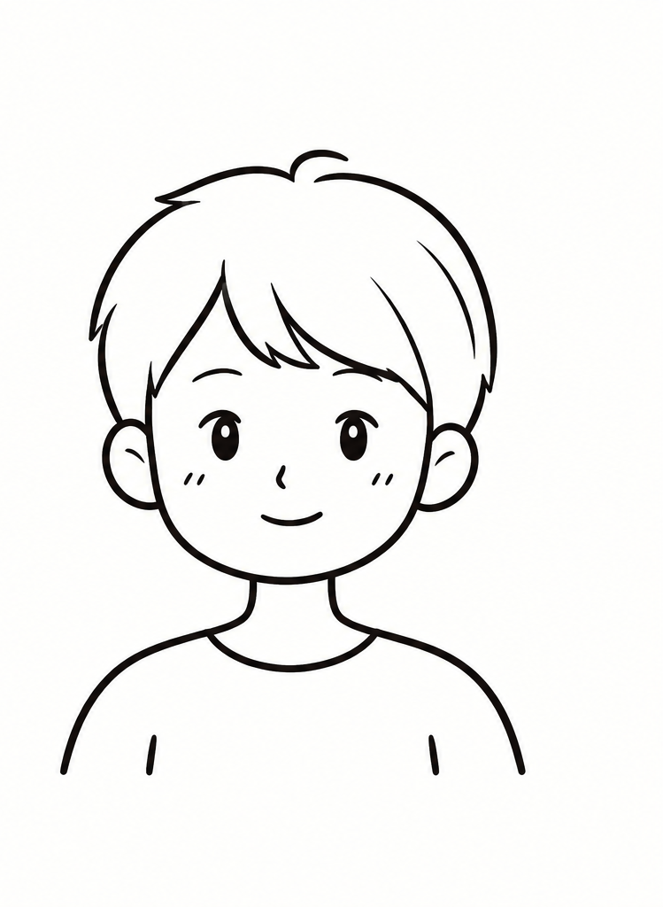
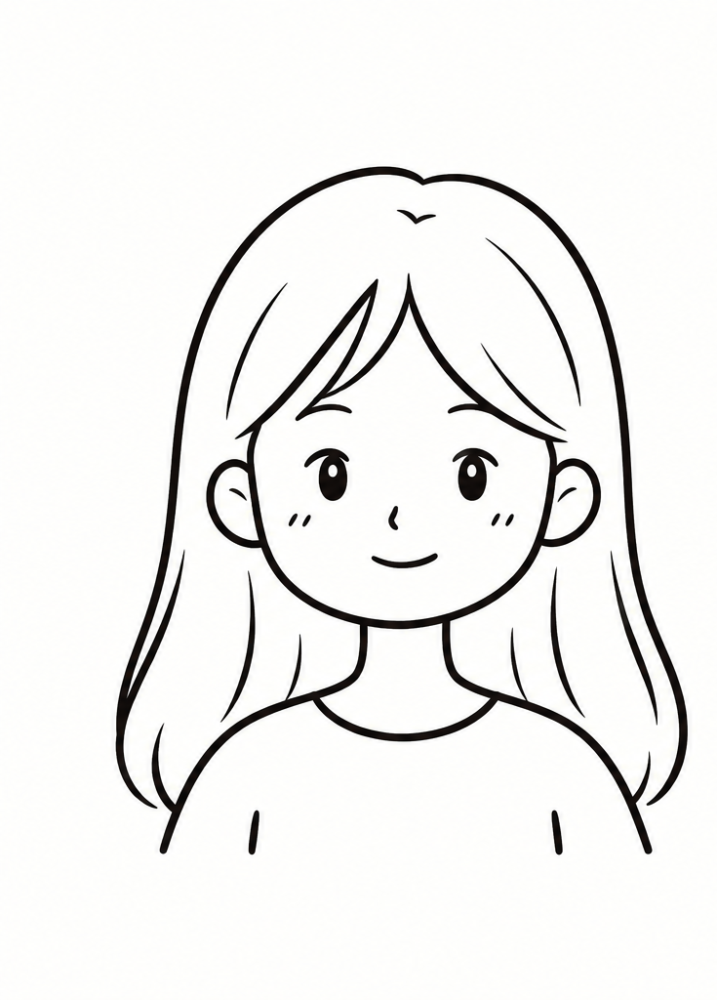

The Internet has become a "key ally" of fashion magazines, while social media has opened up significant new opportunities for titles such as Vogue. Their analysis of the Spanish edition reveals that digital tools have allowed the magazine to expand its audience not only in scale but also in profile, successfully attracting a younger readership. This shift signals a fundamental restructuring of the publication’s relationship with its audience. Formally, the digital platform adopts a horizontal web structure dominated by visual content—where image takes clear precedence over text—marking a decisive move away from the fixed sections of print. Taken together, these changes demonstrate that the transition from print to digital involves far more than a change of medium; it represents a deep transformation in content form, visual logic, and audience engagement (Cristófol Rodríguez et al., 2017, pp. 43, 52, 59).

(Xiaohongshu, n.d.)
The turn · fashion goes online
From Pages to Screens
The contemporary media landscape is increasingly characterized by an infinite scale and logic, particularly within digital media, social media, and streaming platforms. This paradigm shift moves beyond the fixed boundaries of traditional print, expanding the possibilities of media production and consumption through technological and cultural convergence (Echauri，2023).
The digital fashion magazines need multi-platform distribution and social media strategies. On platforms such as Instagram and TikTok, algorithm-driven visibility makes user engagement and discoverability increasingly important（Fu，2025）.

vogue.com
VOGUE
Celebrity Style
All the Best Looks from the SeasonStreet Style Is Back On ScheduleThe Newsstand Refuses to DieReading Fashion on Every Screen
(Vogue, n.d.)
Now · the reader has the power
The Digital Reader
For the digital reader, discoverability is shaped by how content is organised and presented. McKelvey and Hunt’s (2019) concept of “surrounds” informs GLOSS 2.0, where navigation menus and content sections guide readers through the magazine and towards different fashion stories.


Next · two media, one story
The Future of Fashion Media
Paper is not dying — it becomes a collector's object, slow and tactile, while the screen carries the daily feed. Print and pixels are learning to coexist.


 (Xiaohongshu, n.d.)
(Xiaohongshu, n.d.)